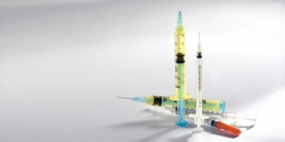
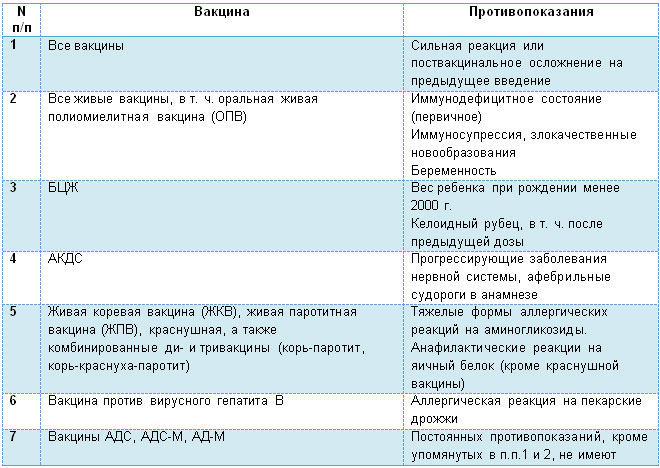

Истинные и ложные
противопоказания к вакцинации

Отношение к противопоказаниям к вакцинации постоянно меняется – поводов для «отводов» становится все меньше, перечень заболеваний, освобождающих от прививок становится все короче. И то, что раньше было противопоказанием, например хронические заболевания, теперь наоборот является показанием к вакцинации. Надо заметить, что с развитием медицины и фармакологии меняется не только отношение к прививкам, но и возможности их применения, и списки противопоказаний.
- Истинные противопоказания – они перечисляются в официальных российских и международных документах, например, в инструкциях и руководящих документах. Эти противопоказания доказаны исследованиями и объективны;
- Ложные противопоказания – создаются «антивакцинаторными экстремистами», которых к сожалению в современном обществе становится все больше, не смотря на то, что ВОЗ (Всемирная организация здравоохранения) признала вакцинацию идеальным средством борьбы с инфекционными заболеваниями, особенно, в нашу эпоху – когда антибиотики начали терять свою эффективность. Характерно, что ложные противопоказания продуцируют не только пациенты, их окружение, но и сами врачи, не имеющие достаточной квалификации;
- Абсолютные противопоказания – это в первую очередь истинные противопоказания, при них прививание не может делаться не под каким предлогом;
- Условные (относительные, ситуационные) противопоказания – являются также истинными противопоказаниями, по ним решение о прививании принимается индивидуально врачом исходя из клинической картины, анамнеза, эпидемической обстановки. Примером таких противопоказаний может служить аллергия на куриный белок, на котором и «выращивается» добрая часть всех вакцин. Но когда риск смерти превышает риск аллергических реакций, тогда проводится антигистаминная терапия и затем – вакцинация. Это касается и многих других случаев;
- Временные противопоказания – к ним, например, относятся: повышенная или пониженная климатическая норма, неудовлетворительные показатели после анализа крови и мочи, повышенная температура тела, слабость и недомогание, наличие воспалительных процессов (пусть и незначительных);
- Постоянные противопоказания – это те истинные противопоказания, которые не смогут быть сняты с течением времени, например, глубокий дефицит иммунной системы;
- Общие противопоказания – в большинстве случаев это те же относительные противопоказания, связанные с обострением хронических или появлением острых заболеваний;
- Частные противопоказания – относятся исключительно к конкретной прививке, это может быть беременность или другие случаи, когда противопоказана только отдельно взятая прививка.
Таблица. Перечень медицинских противопоказаний к проведению профилактических прививок
Перечень противопоказаний постоянно сокращается, что связано, в том числе, с совершенствованием самих вакцин. Но всем родителям необходимо понимать, что вакцинация – это самый надежный способ защитить своих детей от тяжелых и смертельно опасных инфекций, при этом побочные эффекты в ряде случаев неизбежны, ведь после прививания , ребенок переболевает болезнью в облегченной (неопасной) форме. Если соблюдаются все предписанные условия вакцинации и медицинский персонал имеет необходимую для этого квалификацию – вреда здоровью ребенка нанесено не может. Прививки, прошедшие испытания на территории РФ и показавшие свою эффективность и безопасность (а Россия имеет одну из лучших медицинских школ определения безопасности вакцин в мире) могут быть использованы при соблюдении предписанных условий без сомнения.
И в заключении хочется добавить: Уважаемые родители! Вакцинация является необходимой техникой защиты от особо опасных инфекционных заболеваний, поэтому не доверяйте слухам и занимайтесь самообразованием, чтобы не стать добычей экстремистов-антивакцинаторов. Правильное и своевременное прививание сможет однажды спасти жизнь вашему ребенку. Это особенно актуально для людей, предпочитающих отдых в виде путешествий.